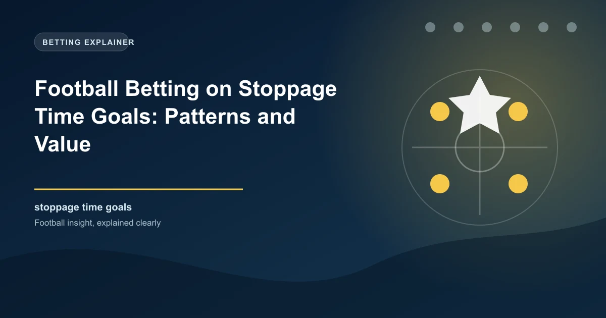

Stoppage time goals are among the most dramatic moments in football. A match that appears decided can be flipped on its head in the dying seconds, and for bettors, these late goals represent both enormous risk and genuine opportunity. The key to profiting from stoppage time goals is understanding the statistical patterns that govern when and where they occur, which leagues produce the most, and how to position yourself in live markets when the clock is winding down.
Stoppage time goals, also called injury time goals or added time goals, occur more frequently than most casual bettors realise. Across Europe's top five leagues, roughly 15 to 20 percent of all goals are scored after the 90th minute when stoppage time is included. That figure has risen sharply since the 2022 World Cup, where FIFA's emphasis on more accurate time-keeping led to significantly longer periods of added time. The average stoppage time in the Premier League climbed from around 6.5 minutes in the 2021-22 season to over 8 minutes in subsequent campaigns, and this trend has been mirrored across La Liga, Serie A, Bundesliga, and Ligue 1.
More stoppage time means more opportunities for goals. In matches where the score is level or separated by a single goal heading into the 85th minute, the probability of at least one goal being scored in stoppage time rises considerably. Teams that are chasing the game commit more bodies forward, leave gaps at the back, and create transitional chaos that leads to high-quality scoring chances for either side. This dynamic is the foundation of stoppage time betting value.
Not all leagues are created equal when it comes to stoppage time action. The Premier League consistently ranks among the highest for goals scored after the 90th minute, driven by its famously high tempo, aggressive pressing, and a culture that encourages attacking football until the final whistle. The Bundesliga is not far behind, benefiting from an open, attacking style and relatively high average goal totals per match.
Serie A has historically been considered more defensively disciplined, but recent seasons have seen a notable uptick in late goals, partly due to tactical evolution and partly due to longer stoppage times being awarded. La Liga sits in the middle, with certain clubs like Real Madrid and Barcelona being particularly prolific scorers of late goals, often through individual moments of brilliance from elite forwards. Ligue 1 varies more widely depending on the season and the dominance of PSG relative to the rest of the league.
For bettors, these league-level differences matter. If you are targeting stoppage time goals, the Premier League and Bundesliga offer the most consistent volume. However, lower divisions in countries like England, Spain, and Turkey can also produce surprisingly high rates of late goals, often due to less organised defences and a more end-to-end style of play that breaks down as fatigue sets in.
At the team level, certain clubs consistently appear in stoppage time goal records. Teams with strong fitness levels and deep squads tend to score more late goals because they can maintain intensity when opponents tire. Manchester City, for example, have a well-documented pattern of scoring late goals, a byproduct of their relentless pressing system and the fitness demands placed on every player. Similarly, clubs with explosive attackers who thrive on counter-attacks can punish teams that push forward desperately in the closing minutes.
On the flip side, teams that regularly concede in stoppage time tend to share certain traits. They often lack depth in defensive positions, relying on a small core of defenders who become physically and mentally exhausted by the final 15 minutes. They may also lack the game management experience to close out matches effectively, leading to soft fouls in dangerous areas, misplaced clearances, and lapses in concentration that cost them dearly. Newly promoted teams and sides with年轻的 managers still developing their tactical frameworks are statistically more vulnerable to conceding late.
The over/under market is where stoppage time goals have the most direct financial impact. Consider a match that sits at 1-1 heading into the 90th minute. The Over 2.5 goals line might be priced at 2.50 or higher, reflecting the uncertainty. A single stoppage time goal pushes that total to 2-1 and the over hits. For bettors who placed Over 2.5 earlier in the match at a better price, the late goal represents a significant return.
The BTTS (Both Teams to Score) market is similarly affected. A match can be sitting at 1-0 with BTTS looking unlikely, only for the trailing team to grab a late equaliser. This is especially common when the trailing team is at home, has been creating chances throughout the match, or is facing a defence that has shown signs of cracking under sustained pressure. The psychological shift that occurs when a team is desperate for a goal often leads to a flood of chances in the final minutes, and one of those chances frequently finds the net.
The Both Teams to Score Yes market often sees its odds drift as the match progresses without a second goal, creating potential value for bettors who identify situations where the trailing team is likely to push hard. If a home side trails 0-1 with 10 minutes remaining and has been generating shots on target throughout the match, the probability of them scoring is often higher than the live odds suggest, especially when you factor in the defensive fragility of teams protecting a narrow lead.
Live betting on stoppage time goals requires a disciplined approach and a clear understanding of the match context. There are several situations where late goal betting offers genuine value rather than just excitement.
When a team trails by one goal with 10 to 15 minutes remaining and has been creating chances, the probability of a stoppage time equaliser is often underestimated by bookmakers. Look for matches where the trailing team has a high expected goals figure, has been winning the territory battle, and is facing a defence that is visibly tiring. The odds on BTTS Yes or Over 2.5 goals can offer excellent value in these scenarios.
When managers bring on fresh attacking players around the 70th to 75th minute, it signals a clear intent to push for goals. These substitutes often make their impact in the final 15 minutes, including stoppage time. If you notice multiple attacking substitutions from a team that is drawing or trailing, the probability of late goals increases materially.
Since the implementation of longer stoppage times, matches regularly see 8 to 12 minutes of added time. This extended period creates additional goal-scoring opportunities that simply did not exist in the era of 3 to 4 minutes of added time. When you see a fourth official's board showing 8 or more minutes, the market often has not fully adjusted to this reality, creating value on goals markets.
The post-2022 revolution in stoppage time management has fundamentally changed the landscape for late goal betting. Before the change, a typical stoppage period of 3 to 4 minutes gave trailing teams a very narrow window to find an equaliser. Now, with 8 to 12 minutes being common, the dynamics have shifted dramatically. The additional time allows for more sustained attacks, more defensive fatigue, and more opportunities for moments of quality or chaos to decide the match.
Research across the 2023-24 and 2024-25 seasons consistently shows that goals scored in the 90th minute and beyond have increased by approximately 20 to 25 percent compared to pre-2022 levels. This is not simply a function of more minutes being played; it reflects a psychological shift among players and managers who now treat the extended stoppage period as a genuine additional phase of the match rather than a formality. Teams train for these scenarios, tactics are adjusted, and the intensity in the final 10 minutes of play has risen accordingly.
Identifying value in stoppage time markets requires combining statistical awareness with real-time match reading. Here are the key factors to assess when evaluating whether a late goal is likely.
Match state: The single most important factor. Matches that are level or separated by one goal produce the most stoppage time goals. Blowouts generate fewer because the leading team manages the game effectively and the trailing team lacks the psychological drive to push forward with genuine conviction.
Home advantage: Home teams are significantly more likely to score stoppage time goals than away teams. The crowd energy, familiarity with the pitch, and the psychological weight of home expectations all contribute to this pattern. When a home team is chasing the game late, the crowd's involvement can be a genuine twelfth man effect.
Card accumulation: Matches with multiple yellow cards, especially late in the game, tend to produce more stoppage time goals. This is partly because the referee adds extra time for bookings and substitutions, and partly because tired, frustrated players make more mistakes under pressure.
Manager tendencies: Some managers are known for aggressive late-game tactical changes, pushing full-backs forward, switching to a more attacking formation, or making multiple attacking substitutions. These tendencies correlate with higher late goal rates for their teams.
Referee patterns: While harder to quantify, certain referees consistently award more stoppage time than others. When you identify a referee who regularly allows 9 to 10 minutes of added time, the goal-scoring window expands and the probability of a late goal increases.
Many bettors fall into traps when chasing stoppage time goals. The most common mistake is betting on late goals in matches where the scoreline is 2-0 or greater. In these situations, the trailing team has usually accepted defeat, the leading team is managing the clock, and the probability of a goal is significantly lower than in tighter contests. Another mistake is ignoring the match flow entirely and simply backing goals because the odds look attractive. A match can be 0-0 with five minutes remaining but if both teams are playing cautiously and neither is creating chances, the probability of a stoppage time goal is low regardless of the odds on offer.
Chasing losses is the most dangerous behaviour of all. If you have lost a bet on a late goal in one match, the temptation to immediately place a similar bet in the next game is powerful but statistically misguided. Each match is an independent event, and the previous outcome has no bearing on the next one. Stick to your analysis, trust your process, and accept that stoppage time betting is a long-term strategy where patience is the ultimate edge.
Our live predictions and statistical models track match momentum in real time. Use our tools to identify stoppage time betting opportunities backed by data, not just excitement.
Explore Live Predictions Win
Win